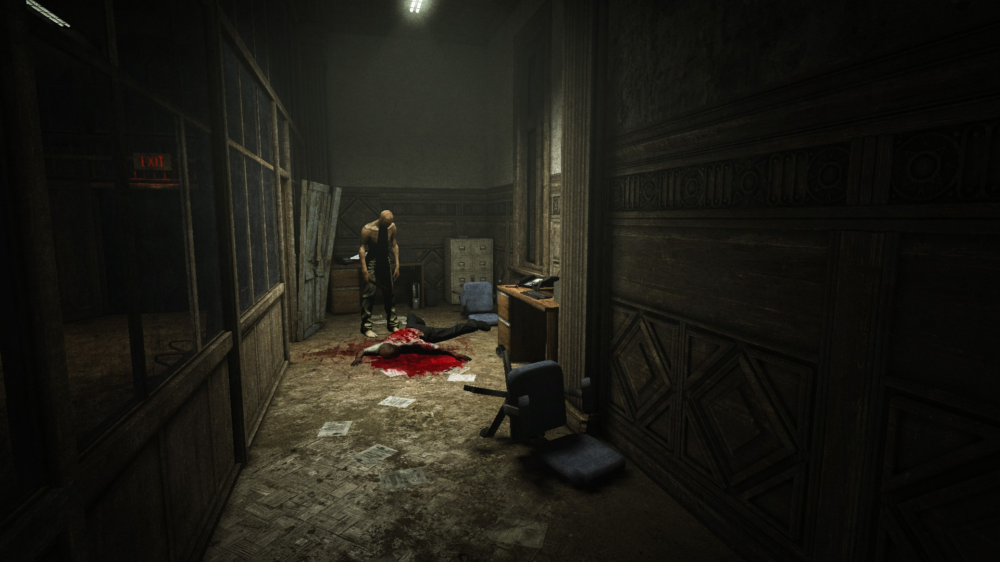

A work of horror is very tricky to get right, regardless of the medium, but when it is done right can completely shift the paradigms of pop culture.
This is perhaps most evident in film, which has possibly influenced public understanding of the genre more than any other medium.
Thanks to film, horror has become so ingrained in the mainstream pop culture almost everyone has a shorthand of how most horror movies will turn
out before they even see it. Don’t go in the house alone. Don’t have sex. Always double check the monster is dead. Don’t trust the creepy kid.
Don’t do the thing the book wrapped in human skin tells you to do (that one’s a little specific but you’d be surprised how responsive to authority some of these people are).
It becomes less of a matter of if things will go wrong, but how it will happen and what interchangeable tropes the film will use or subvert.
Horror cinema is also has one briefest shelf life, as for every horror masterpiece there are dozens upon dozens of less-successful mimicries meant to cash in on
the new fad scare.
So, what does it mean when film has influenced how we interact with the horror genre?
We are used to interacting with horror vicariously and empathize with one or more characters as they go through a uniquely terrible, horrible, no good, very bad day.
The characters that garner the most admiration from audiences are usually the ones that remain the most level-headed, logical, and resourceful.
We like them because they are playing by the rules of the genre; they are the closest to the audience because they are the most self-aware of the present threat.
You look at them finding out how to survive and say to yourself “Yeah I would do that, too.”
Think characters like Ellen Ripley from Alien, R.J. MacReady from The Thing, or the darkly comedic Ash Williams from Evil Dead.
Simultaneously, you look at the dozens of unlucky (or sometimes just plain stupid) character’s the film’s monstrosity rips through in a litany of unenviable ends
and think to yourself “Eh, I saw that coming.”
Video games, however, put a completely different spin on this formula.
Most notably in that video games are inherently interactive. It’s in the title; they are games meant to be played and interacted with.
Because of this the player does not have the luxury to simply sit back and watch like a movie and are instead forced to make decisions for their character.
In doing this, the vicarious threshold with which the audience views characters in a horror work is shattered, and they become immediately invested in the conflict because it is happening to them.
In short, when you are playing a horror game you're not watching the victims anymore, you are the victim.
The method in which horror is expressed in games is given another layer of complexity as certain games allow the players interact with the world differently.
This is important because depending on how the game is designed, it can instill very different tones of horror.
Usually, this is compounded with a mechanic disempowers players. It’s not very scary if the players immediately have the solution to every
problem they come across and in order for the horror to work, players must be handicapped in a meaningful way.
For example, certain games give players the tools to defeat the monsters, slashers, or supernatural creatures that come their way.
An example of this can be seen in the more recent releases and remakes of the Resident Evil games which arm players with a variety of weapons to dispatch the biological monstrosities standing between them and survival.
The caveat (and disempowerment) to this arsenal is that ammunition is scarce, and the uneven tottering of zombie hordes make headshots difficult to pull off.
While this aresenal is empowering at first it comes with the trade off that the player character is usually greatly outnumbered or outclassed by the creatures they must contend with.
Creatures like Lickers (named so for the grotesque, frog-like tongues they attack with) can leap onto to walls and ceilings to easily outmaneuver the player.
With every misfired bullet or ill-timed grenade intensifies that sense of dread, as the limited supply is dwarfed by the undead horde and replenishing munitions is both difficult and infrequent.
If this was not enough, player health only regenerates by consuming certain items which are also in a limited supply. Even if the player were to comb over every area and find every bullet and medkit in the game,
they are limited further by a finite storage space for these items that weapons, ammunition, and medical supplies all share.
Because of all these limiting factors, finite supplies and space with too many enemies to use them on, the game creates tension where the only way to progress is that the player must engage
in an ultra-conservative playstyle. This results in a slower burn in the horror experience, as the game requires you to be both skilled in the gameplay and discerning in how you have allocated your resources.
While playing the Resident Evil, you are left constantly second guessing yourself as to whether you’ve been managing your equipment properly and if you will be able to have enough to proceed to the next check point.
Another kind of disempowerment can be seen in games where the player is unable to use weapons at all and must rely on other methods to survive.
This design philosophy is present in games like the Amnesia or Outlast, where combat is not an option, forcing the player to resort to avoidance and stealth.
This illustrates a design principle in horror games that perhaps elicits a different variant of tension from players.

Without a method of being able to defend oneself from the game’s antagonists, the tension from the games shifts from “how can I make this problem go away,” to “how do I get away from this problem.”
To this end, both games have stealth mechanics with which players can avoid the enemies hunting them down, with Outlast enabling players to hide places like inside lockers, under tables, and in small outcroppings, and Amnesia has a unique mechanic whereby looking at the monster the player, notifies it of their presence.
This means that players are left to approximate the monster’s location, meaning that a large part of their survival is educated guesswork.
The horror games where players are left defenseless require them to make more split-second decisions and to assess their environment for suitable hiding locations.
As a result, the tension is not the slower burn of when the next checkpoint or resupply of resources comes in but instead rather quick and immediate explosions of terror.
In essence these mechanics are made so that the player is always on the back foot, to divide their attention as much as possible so that there should always be something that takes them by surprise in the moment-to-moment gameplay.
In other words, this philosophy of game design is incentivized so that the player gets overwhelmed and make the mistakes the long-lampooned horror victims would make.
In essence, the reason horror works so well in video games is that where choice is a privilege in most other genres, has been subverted into a burden.
Between players making decisions out of panic to second guessing every decision they make; every single choice should effectively racket up the tension in way other mediums simply cannot, leading to an experience that is more personally terrifying.